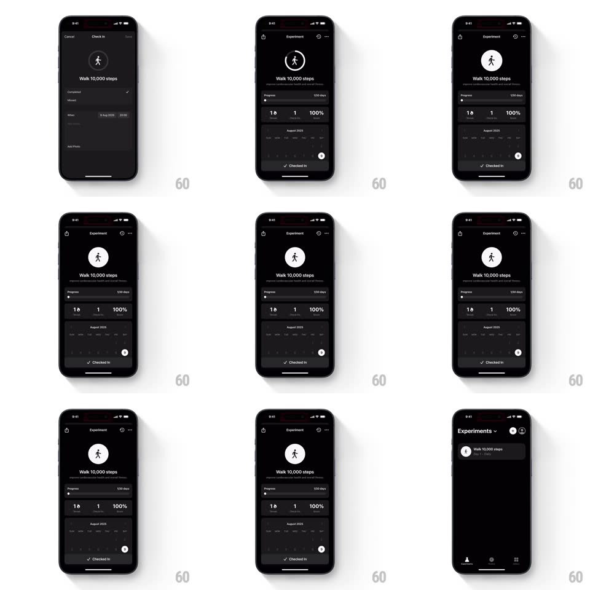

Media
Frame-by-frame

Rebuild this animation 1:1: Easlo's habit check-in - saving a "Walk 10,000 steps" check-in fires a chain of micro-animations: pulsing icon, filling progress bar, popping calendar day, and a slide-up "Checked In" toast.

Rebuild this animation 1:1: Easlo's habit check-in - saving a "Walk 10,000 steps" check-in fires a chain of micro-animations: pulsing icon, filling progress bar, popping calendar day, and a slide-up "Checked In" toast. ## Integration Integration: stack-agnostic spec - springs given as stiffness/damping, timed motions as duration + curve; map every value to your framework and animation library of choice. ## Scene Dark "Experiment" detail for "Walk 10,000 steps": a walking figure icon, a progress bar (1/30 days), a stat row (1 Day, 1 Best Streak, 100%), an August 2025 calendar grid, and a "Checked In" toast with a check. Ends back on the Experiments list. ## Motion spec Pattern: chained save micro-animations, ~1.6s total. - Save tap: the walking icon pulses - two rings expand from it (scale 1 -> 1.8, opacity 80 -> 0%, 600ms, staggered 150ms). - Progress: the bar fills to its new value (400ms, ease-out) as the day count ticks up. - Calendar: today's cell pops (scale 0 -> 1, spring ~440/18, 300ms) with its check drawing (150ms). - Toast: "Checked In" slides up from the bottom (spring ~340/24, 350ms), holds 1.2s, slides away. - The stat numbers flip up one by one (100ms stagger, 200ms each). ## Calibration - The chain runs in order - icon, bar, calendar, toast - each starting as the prior lands. - Everything is monochrome; the motion carries the celebration, not color. ## Reduced motion The toast fades in; all other elements update without animation. ## Don't miss - The calendar pop is a spring, not a fade - it must overshoot once. - The toast never covers the calendar.